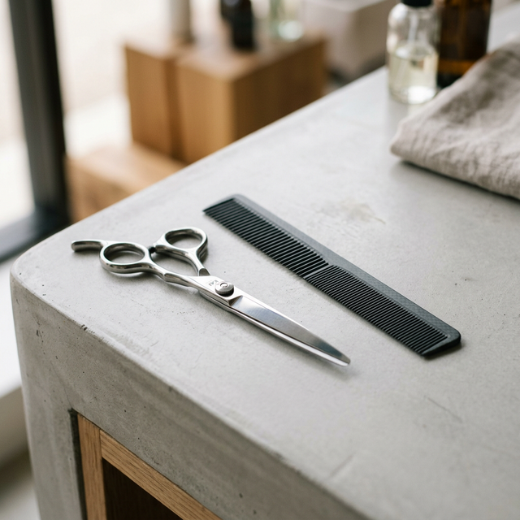
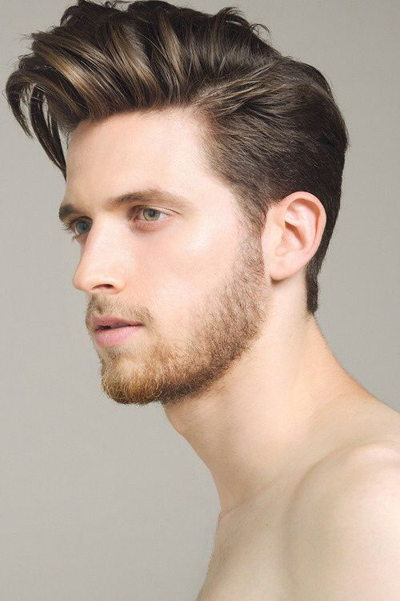
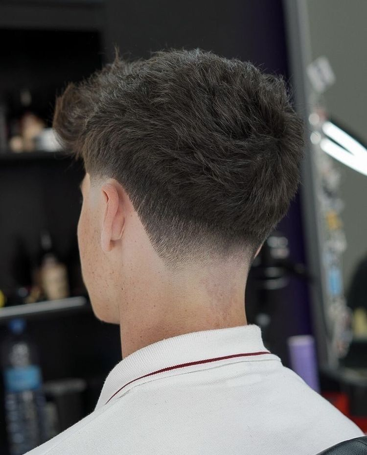

En la peluquería de Rocío Salcedo, nos importa más que solo tu pelo. Nos importa que te sientas escuchado, cuidado y, sobre todo, en familia.

"Llevo toda una vida entre tijeras y peines, pero lo que realmente me apasiona es la gente de mi barrio. Para mí, cada persona que entra por esa puerta no es solo un cliente, es un vecino y un amigo."
En **Peluquería Rocío Salcedo**, creemos que el corazón de nuestro salón no son las paredes, sino el trato y la dedicación en cada corte. Por eso, preferimos que nos conozcas por nuestro trabajo y nuestra sonrisa en persona.
— Rocío Salcedo
Un corte que te haga sentir tú mismo, charlando tranquilamente y sin prisas.
Técnicas suaves para que tu cabello brille con su luz natural.
Para ese bautizo, boda o simplemente porque hoy te apetece verte mejor.
Nos mantenemos al día con las últimas corrientes para que luzcas radiante en tus momentos más especiales. Aquí tienes la estructura de lo que podemos crear para ti.


"Preparamos esta galería para que Rocío pueda añadir aquí las fotos reales de sus clientes, mostrando su auténtico talento sin necesidad de modelos de catálogo."
Usa mascarillas con aceites de coco o argán una vez por semana. Para un extra de brillo, enjuaga siempre con agua fría al final.
Un pelo sano nace de una raíz sana. Masajea suavemente al lavar para activar la circulación y eliminar impurezas.
Nunca uses planchas o secadores sin protector térmico. El calor excesivo deshidrata la fibra capilar y le quita vida.
Lo que comes se nota en tu pelo. Incluye aguacates, nueces y verduras verdes para aportar las vitaminas que tu cabello necesita.
Corta las puntas cada 6-8 semanas. Previene que se abran y mantiene la fuerza y el movimiento de tu melena.
Cepilla tu pelo antes de dormir para eliminar restos de polución y distribuir los aceites naturales de la raíz a las puntas.
Evita el agua muy caliente. El agua tibia limpia mejor sin resecar, y un chorro de agua fría al final regala un brillo espectacular.
Con el pelo mojado, usa siempre peines de púas anchas. Empieza por las puntas y sube hacia la raíz para evitar tirones y roturas.
No satures tu pelo. Lavarlo un día sí y otro no (o incluso menos) ayuda a que los aceites naturales mantengan su hidratación.
Los rayos UV también dañan el cabello. Usa sombreros o productos con filtro solar cuando vayas a pasar mucho tiempo al aire libre.
Estamos en Calle Calvario 8, Tudela de Duero. ¡Pásate a vernos!
📍 Dónde estamos:
Calle Calvario, 8
47320 Tudela de Duero, Valladolid
⏰ Nuestro horario: